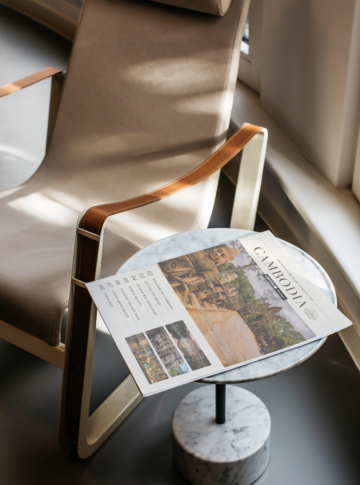
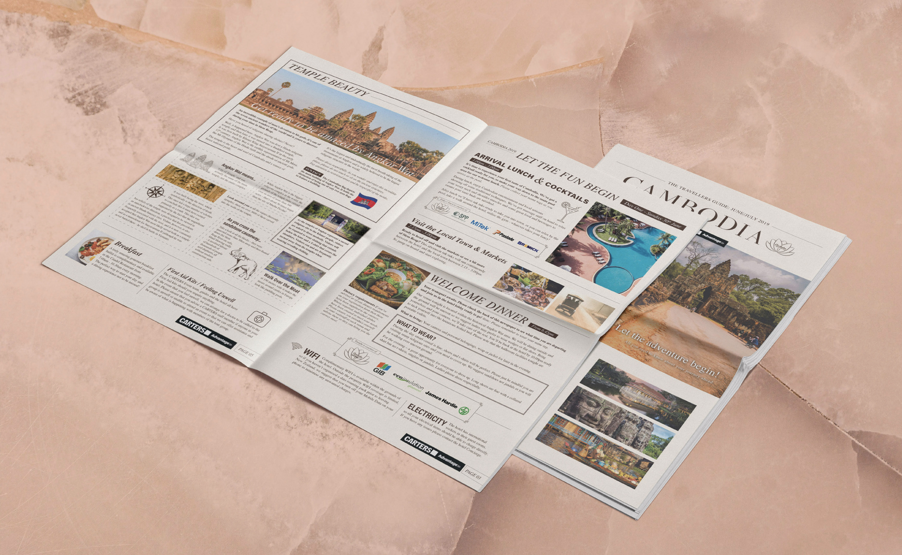
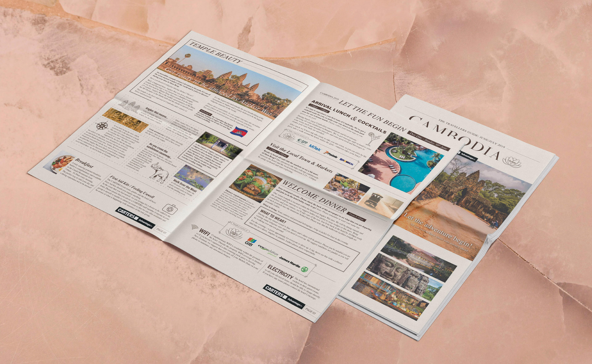
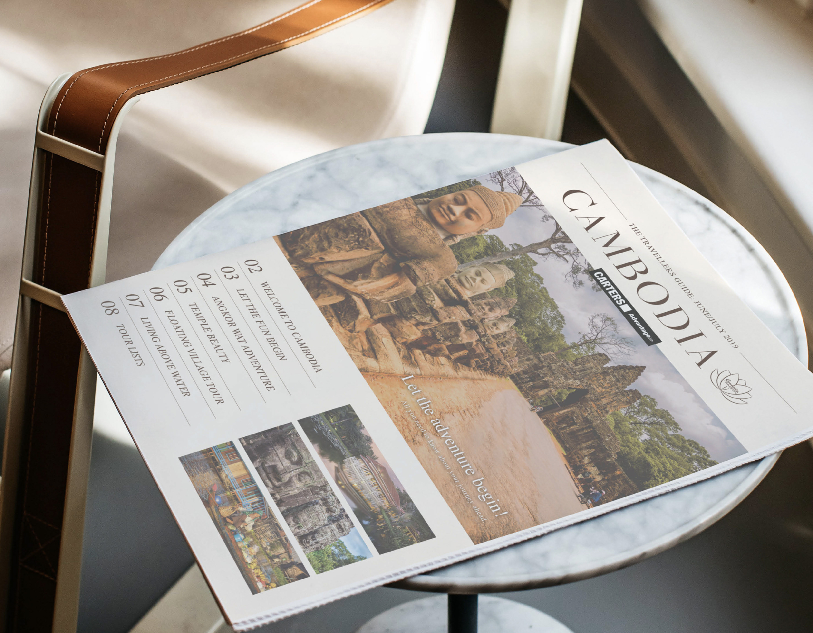
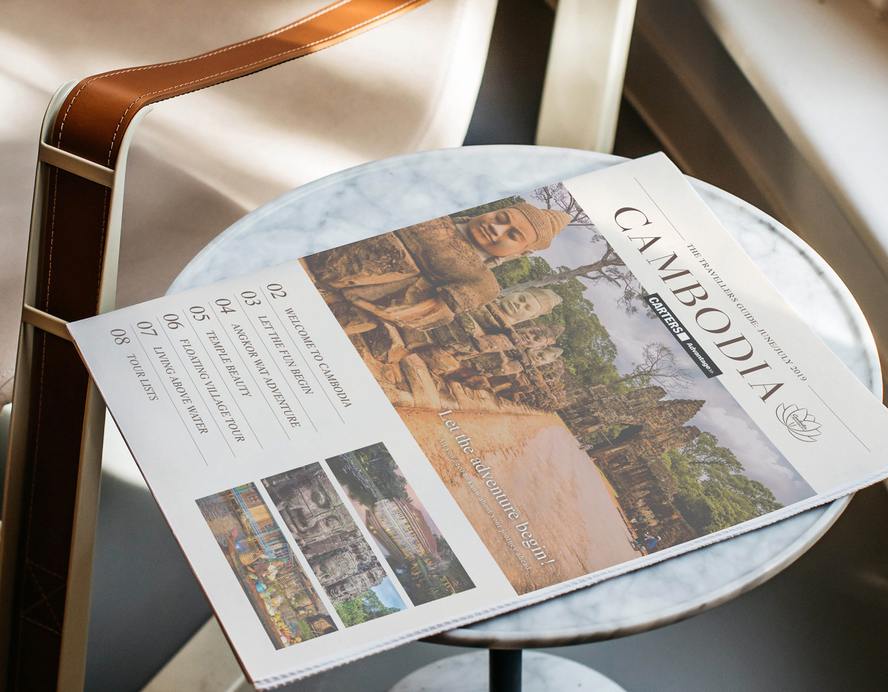

Selected work
Cambodia & Saigon Itinerary
Summary
I designed a travel itinerary for a CARTERS loyalty reward trip to Cambodia and Saigon, balancing practical information with a more editorial, lifestyle-led feel.
The piece used rich imagery and a relaxed newspaper-inspired layout to make the document both useful and enjoyable to read.
The CARTERS Advantage loyalty program rewards CARTERS Trade Account holders for spending with CARTERS. Each time a Trade Account holder makes a purchase, they accumulate points which can then be redeemed for different rewards.
In 2019, the rewards included a group trip to Cambodia and Saigon. My aim was to create an itinerary that was not only functional but also enjoyable to read.
I incorporated lots of vibrant images to capture the magic of Cambodia and Saigon, where the ancient and modern worlds collide, and laid everything out in a newspaper format to give it a leisurely coffee-table feel.




For over a decade, I’ve been turning ideas into experiences and digital things people actually want to engage with. I work across branding, digital design, marketing, UI/UX, and AI-assisted vibe coding and design workflow. I’m happiest where storytelling, design, and technology overlap as that’s usually where the good stuff happens.